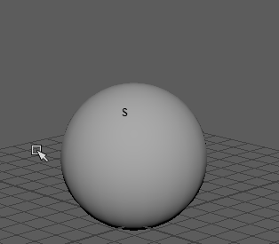

打开软修改变形器
- 从菜单栏中，选择
- 在“装备”(Rigging)菜单集中，选择
- 在“动画”(Animation)菜单集中，选择
- 在“建模”(Modeling)菜单集中，选择
“软修改工具”(Soft Modification Tool)是具有可调整衰减属性的变形器，通过这些属性可操纵 3D 几何体，就像美工人员推拉一块模型粘土来改变其形状一样。这样，您可以平滑地使高密度曲面网格变形，而不必手动调整每个顶点。通过颜色反馈，可以可视化变形器周围和跨曲面网格的影响区域。

默认情况下，操纵器中心的变形量最大，然后从中心向外逐渐衰减。但是，可以控制变形的衰减来产生各种类型的效果。
您可以对 NURBS 曲面、多边形曲面、细分曲面、曲线、粒子或任何具有组件的对象使用“软修改工具”(Soft Modification Tool)。